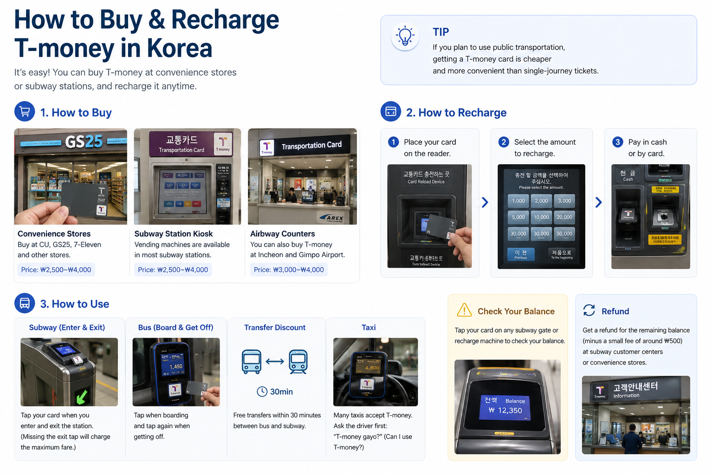
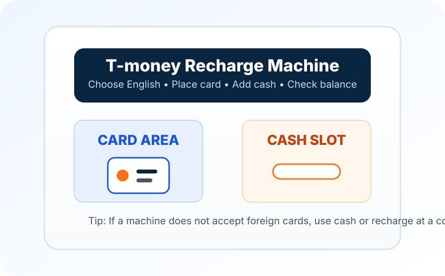

Option 1: Buy after arrival
Buy at CU, GS25, 7-Eleven, airport convenience stores or subway station kiosks.
Best for most travelersT-money guide
Everything first-time visitors need to know about buying, recharging and using Korea's transportation card for subways, buses, taxis and convenience stores.

Quick visual guide
This is the basic flow most tourists need after arriving in Korea.

Buy a card at a convenience store, subway station or airport pickup counter.
Add balance with cash at a subway machine or convenience store.
Tap when entering and exiting subway gates. Tap again when leaving the bus.
Check your remaining balance at gates, machines or convenience stores.
What is T-money?
T-money is a prepaid contactless card used across Korea's public transportation system.
Tap when entering and exiting subway gates.
Tap when boarding and again when getting off.
Many taxis accept T-money, but check before paying.
Some convenience stores accept T-money for small purchases.
Where to buy
Most travelers can buy T-money after arrival, but reservation can help if you want everything prepared before landing.
Buy at CU, GS25, 7-Eleven, airport convenience stores or subway station kiosks.
Best for most travelersTravel platforms such as Klook or KKday may offer T-money cards or bundles for airport pickup.
Best for late-night arrivals or first-time visitors| Option | Convenience Store | Klook / KKday |
|---|---|---|
| Buy before flight | ❌ | ✅ |
| Airport pickup | Usually buy on-site | ✅ |
| Immediate use | ✅ | ✅ |
| Price | Usually lower | May be slightly higher |
| Best for | Most travelers | Prepared first-time visitors |
Recharge
Cash is the safest recharge method for foreign visitors. Some machines may not accept foreign cards.

| Cash | ✅ Best option |
| Convenience store | ✅ Easy |
| Subway recharge machine | ✅ Easy with cash |
| Foreign credit card | ⚠️ Not always accepted |
| Korean bank account | ❌ Not for most tourists |
Tourist tip
If a recharge machine does not accept your card, use cash or ask at a convenience store.
Recharge limits can vary by machine, store or card type. Always follow the amount shown on the recharge screen.
Card choice
T-money is not the only card option. Choose based on whether you need transportation only, payment features or unlimited Seoul transit.
| Feature | T-money | WOWPASS | Climate Card |
|---|---|---|---|
| Subway | ✅ | ✅ | ✅ |
| Bus | ✅ | ✅ | ✅ |
| Taxi | ✅ | ✅ | ❌ |
| Convenience store | ✅ | ✅ | ❌ |
| Nationwide use | ✅ | ✅ | ❌ |
| Currency exchange | ❌ | ✅ | ❌ |
| Prepaid payment card | ❌ | ✅ | ❌ |
| Unlimited Seoul transit | ❌ | ❌ | ✅ |
| Best for | Most travelers | Tourists needing payments | Heavy Seoul users |
The simplest choice for most first-time visitors. It is cheap, easy to buy and works widely across Korea.
Useful if you want transportation, prepaid payment and currency exchange features in one tourist-focused card.
Useful mainly for travelers staying in Seoul and using public transportation frequently.
Use it correctly
These small mistakes can cause extra fare, failed transfers or confusion at the gate.
Forgot to tap out at the subway exit gate.
Tap your card at both entry and exit gates.
Forgot to tap when leaving the bus.
Tap again when leaving the bus to get transfer discounts.
Expecting all recharge machines to accept foreign cards.
Some machines accept cash only. Convenience stores can also recharge T-money.
Not having enough balance on the card.
Check your balance before starting a long trip.
Buying single-use tickets instead of a transport card.
A transport card is usually cheaper and more convenient.
Refund
You may be able to refund the remaining balance, but the physical card price is normally not refundable.
Before leaving Korea: ask at a subway service center or convenience store about balance refund. A small service fee may apply, and the card purchase price is normally non-refundable.
T-money FAQ
These questions focus on buying, recharging and using T-money as a foreign visitor.
T-money is a rechargeable transportation card used on subways, buses, many taxis and some convenience store purchases in Korea.
T-money cards are commonly sold at many convenience stores, subway stations, airport convenience stores, and some travel platforms. However, not every store sells or reloads T-money cards. Look for a T-money logo or a transportation card sign near the entrance, cashier, or bus stop area.
Yes. T-money is one of the easiest transportation cards for first-time visitors because it does not require a Korean bank account.
Usually no. Most foreign visitors cannot use their phone as a Korean transportation card. Apple Wallet and Google Wallet generally do not support Korean public transportation cards for foreign visitors. Mobile T-money services often require a Korean phone, Korean mobile service, or a supported Korean payment method. For most travelers, a physical T-money card is still the easiest and most reliable option.
Important: A physical T-money card works with almost all buses, subways and many convenience stores in Korea. It is the recommended option for most international visitors.
For most first-time visitors, ₩20,000 to ₩30,000 is a practical starting amount for several days of subway and bus use.
Recharge with cash at subway recharge machines or ask staff at convenience stores such as CU, GS25 and 7-Eleven.
Some machines may not accept foreign cards. Cash and convenience store recharge are usually safer options for tourists.
Commonly listed limits are a minimum recharge of ₩1,000, up to ₩90,000 per transaction and a maximum stored balance of ₩500,000. Check the machine or store for current limits.
Yes. Tap your card when entering and exiting subway gates. On buses, tap when boarding and tap again when getting off.
Many taxis accept T-money, but not every taxi experience is the same. Check the payment reader or ask the driver before paying.
Choose T-money if you mainly need transportation. Choose WOWPASS if you also want prepaid payments and currency exchange features.
Yes. Some travel platforms such as Klook or KKday may sell T-money cards or bundles for airport pickup. It can help late-night arrivals or first-time visitors.
You may be able to refund the remaining balance at subway service centers or convenience stores, usually minus a small service fee. The physical card price is normally not refundable.
You may be charged incorrectly or lose a transfer discount. Always tap at subway exit gates and tap again when leaving the bus.
You can check your balance at subway gates, recharge machines and convenience stores.